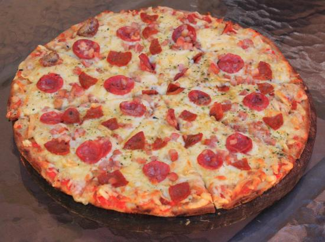

deliciosa corteza suave hecha a mano recubierta con una salsa de carne, receta secreta de nuestra pizzeria. Encima una capa de nuestra deliciosa queso mozarella, incluye nuestros ingredientes especiales, peperoni, albahaca, jamon y champiñones, todos combinados para una experiencia de sabor unica.
deliciosa corteza suave hecha a mano recubierta con una salsa de carne, receta secreta de nuestra pizzeria. Encima una capa de nuestra deliciosa queso mozarella, incluye nuestros ingredientes especales, jamon y peperoni todos combinados para alegrar a tu corazon con una receta llena de amor
deliciosa corteza suave hecha a base de ingredientes veganos recubierta con una salsa de tomate, receta secreta de nuestra pizzeria. Encima una capa de nuestra deliciosa queso mozarella vegano, incluye nuestros ingredientes especales agradables con nuestroa amigos animales, albahaca, aceitunas, tomates y chile pimiento todos combinados para darte una experiencia unica y acorde a tus ideales